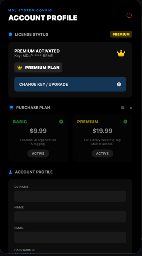
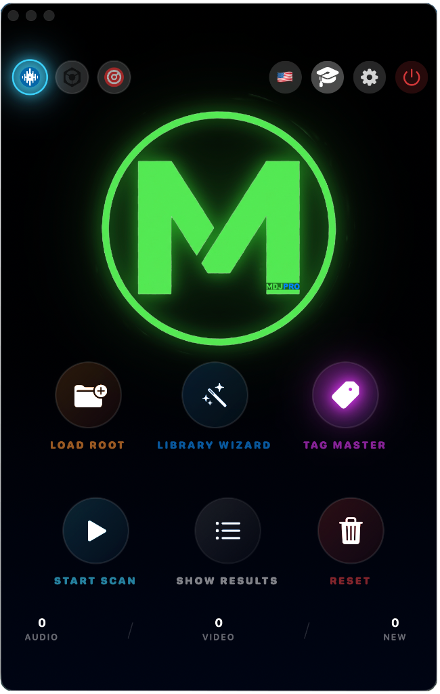
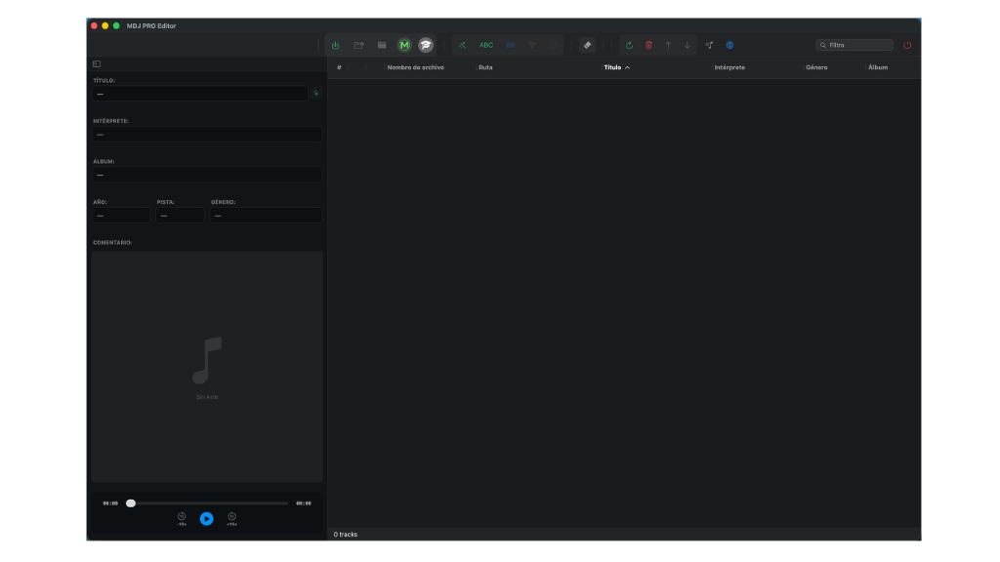

0. Allgemeine Einführung – MDJPRO
Einführung
MDJPRO (Magic DJ Pro) ist eine professionelle Plattform für Musikmanagement, Auditierung und Organisation, konzipiert für DJs, Produzenten und Eventmanager, die nach echten Branchenstandards arbeiten.
Entwickelt von Miami DJ Beat, ist MDJPRO weder ein Player noch ein einfacher Datei-Organizer. Es ist ein Kontrollsystem für Musikbibliotheken, das entwickelt wurde, um eines der wertvollsten Güter eines professionellen DJs zu schützen, zu strukturieren und zu optimieren: seine Musikdatenbank.
In einer Umgebung, in der Organisationsfehler, korrupte Metadaten oder fehlerhafte Scans eine Live-Performance gefährden können, fungiert MDJPRO als operatives Firewall zwischen dem Festplattenchaos und der von Softwares wie Serato DJ, Rekordbox und VirtualDJ geforderten Stabilität.
Systemphilosophie
MDJPRO basiert auf einem grundlegenden Prinzip:
„Professionelle Musik wird nicht improvisiert. Sie wird strukturiert, validiert und geschützt.“
Aus diesem Grund arbeitet die Anwendung mit kontrollierten Arbeitsabläufen, klaren Regeln und ständigen Validierungen. Jede Aktion innerhalb des Systems – vom Laden eines Stammordners bis zum Bearbeiten von Metadaten – folgt einer Logik, die darauf ausgelegt ist, menschliche Fehler, Datenverlust und fortschreitende Unordnung zu verhindern.
MDJPRO ist kein Ersatz für DJ-Software. Es bereitet sie vor, speist sie korrekt und hält sie stabil.
Für wen ist MDJPRO?
- Professionelle und Resident-DJs
- Mobile und Spezial-Event-DJs
- Musikproduzenten und Kuratoren
- DJ-Akademien und -Schulen
- Unterhaltungs- und Event-Unternehmen
- Benutzer, die mit großen, geräteübergreifenden Bibliotheken arbeiten
Wenn Ihre Musik Teil Ihrer beruflichen Identität und Ihres Lebensunterhalts ist, wurde MDJPRO für Sie entwickelt.
Was MDJPRO löst
- Unordentliche und schwer zu pflegende Bibliotheken
- Unvollständige, falsche oder inkonsistente Metadaten
- Scanfehler in Serato oder anderer Software
- Verlust von Pfaden beim Verschieben von Festplatten oder Ordnern
- Fehlende Struktur für Events, Sets und Jahrzehnte
- Risiko der Beschädigung der ursprünglichen Datenbank
Das System führt Ordnung, Rückverfolgbarkeit und Kontrolle ein, ohne den kreativen Flow des DJs zu beeinträchtigen.
Willkommen bei MDJPRO
Die fortschrittlichste Software-Lösung für das intelligente Management von Musikbibliotheken auf macOS.
Ihr Neuer Standard:
Entwickelt für professionelle DJs und Sammler, die Perfektion in der Organisation ihrer Metadaten verlangen. MDJPRO organisiert nicht nur; es transformiert Ihren Workflow durch DNA-Algorithmen und beispiellose Automatisierung.
Wie man dieses Handbuch verwendet
Dieses Handbuch wurde als technischer und operativer Leitfaden konzipiert, nicht als Werbematerial. Hier finden Sie klare Erläuterungen zu jedem Modul, Nutzungsregeln, kritische Warnungen, empfohlene Workflows und professionelle Best Practices.
Es wird empfohlen, das gesamte Handbuch zu lesen, bevor Sie fortgeschrittene Funktionen verwenden, insbesondere solche, die mit Ordnerstrukturen und Metadaten interagieren.
© 2026 MDJPRO – Official Documentation.
1. SYSTEMANFORDERUNGEN – MDJPRO
| KOMPONENTE | ANFORDERUNG |
|---|---|
| Betriebssystem | macOS 12 (Monterey) oder höher. macOS 14 (Sonoma) empfohlen. |
| Prozessor | Nur Apple Silicon (M1, M2, M3, M4). Intel-Macs werden NICHT unterstützt. |
| Speicher (RAM) | Minimum 8 GB. 16 GB empfohlen für große Bibliotheken (>50k Titel). |
| Speicherplatz | SSD erforderlich für das Hosting der Bibliothek. |
| Unterstützte Formate | MP3, AAC, WAV, AIFF, MP4, MOV. |
| DJ-Software | Serato DJ Pro (100 % nativ). Kompatibel mit Rekordbox und VirtualDJ. |
© 2026 MDJPRO – Offizielle Dokumentation.
2. Installation – MDJPRO
MDJPRO_Installer.pkg. Der native Apple-Assistent
startet, um Sie sicher durch den Prozess zu führen.
© 2026 MDJPRO – Offizielle Dokumentation.
3. Erste Schritte – MDJPRO
Dieser Abschnitt führt den Benutzer durch den Registrierungs-, Aktivierungs- und Lizenzvalidierungsprozess. Die Aktivierungsarchitektur verknüpft Ihre Lizenz mit der eindeutigen Hardware-ID Ihres Macs, um die Sicherheit Ihres Abonnements zu gewährleisten.

© 2026 MDJPRO – Offizielle Dokumentation.
4. Benutzeroberfläche – MDJPRO
OBERFLÄCHEN-ARCHITEKTUR:
Der Command Hub ist die zentrale Bedienoberfläche. Seine vereinheitlichte Architektur ermöglicht die Ausführung von Befehlen und die Statusüberwachung in Echtzeit, wodurch die Navigation durch tiefe Menüs entfällt.

Abbildung 4.1: Übersicht über die Befehlszentrale (Command Hub)
© 2026 MDJPRO – Offizielle Dokumentation.
5. KONTROLLZONE – MDJPRO
Kompatibel mit führenden DJ-Softwareplattformen
Native Integration: Das System repliziert die Verzeichnisstruktur als Crates und Subcrates und behält die ursprüngliche Festplattenhierarchie bei.
XML Bridge Protokoll: Erfordert die Aktivierung von 'rekordbox xml' in Einstellungen > Anzeige. Ermöglicht den Import von Strukturen per Drag & Drop.
Unterstützung für Virtual Folders: Die Software erkennt die voranalysierte Datenbank als Erweiterung des Dateisystems und optimiert die Lesezeiten.
© 2026 MDJPRO – Offizielle Dokumentation.
© 2026 MDJPRO – Offizielle Dokumentation.
6. Bibliothek und Organisation 🔒 PREMIUM ONLY
LIBRARY WIZARD (Struktur-Manager): (Nutzung nur mit Premium-Abonnements) Automatisierungsmodul, das standardisierte Verzeichnishierarchien auf der physischen Festplatte erstellt.

ORDNER-SPEZIFIKATIONEN (DNA)
Bereitstellungsfluss (Wizard Architecture)
© 2026 MDJPRO – Offizielle Dokumentation.
7. Editor Tag – MDJPRO
METADATEN-EDITOR (ID3):
Fortgeschrittene Verwaltung von Tags zur Standardisierung der Bibliothek. Die vorgenommenen Änderungen sind destruktiv und werden physisch in die Datei geschrieben, um eine universelle Kompatibilität mit DJ-Software zu gewährleisten.

© 2026 MDJPRO – Offizielle Dokumentation.
8. BETRIEBSMODUS – MDJPRO
ANATOMIE DES EDITORS:
Beschreibung: 7 Editions-Zonen + Magischer Emoji-Reiniger.
Kern-Felder:
- TITEL: Auf Playern sichtbare Daten.
- KÜNSTLER: Interpreten-Credits und Kollaborationen.
- ALBUM: Gruppierung nach Volume oder Set.
- SONSTIGE DATEN: Operative Metadaten (Jahr, Disc).
Technische Echtzeit-Visualisierung der Metadaten:
Worklow-Kontrolle im unteren Bereich des Editors:
- TRACK COUNTER: Gesamtvolumen der Assets in der Sitzung.
- ACTIVE PATH: Monitor für den aktuellen Speicherort.
Fortgeschrittene visuelle Verwaltung und Wiedergabe:
UTILITIES UND WERKZEUGE
© 2026 MDJPRO – Offizielle Dokumentation.
9. Tastaturkürzel – MDJPRO
Optimieren Sie Ihren Workflow durch die Verwendung von Kurzbefehlen. Diese Kombinationen ermöglichen es Ihnen, kritische Aktionen auszuführen, ohne Ihre Mix- oder Editiersitzung zu unterbrechen.
Liste der wichtigsten Befehle
© 2026 MDJPRO – Offizielle Dokumentation.
10. Aktionen und Berichte – MDJPRO
ERGEBNIS-PANEL:
Das Überwachungszentrum von MDJPRO bietet nach jedem Scan- oder Verteilungsvorgang einen detaillierten Bericht über den Status der Bibliothek und die Systemintegrität.

© 2026 MDJPRO – Offizielle Dokumentation.
11. Visueller Funktionsleitfaden – MDJPRO
Kurzübersicht über die wichtigsten Software-Schnittstellen. Dieses Ökosystem gewährleistet einen einheitlichen Workflow von der Aktivierung bis zum finalen Export.
Eröffnungsbildschirm. Identifiziert Ihre Version und bestätigt Ihre Identität als offizieller Benutzer.
Abonnement-Verwaltung, Lizenzaktivierung und Überprüfung des Premium-Status.
Zentrales Launchpad für Library Wizard, Tag Master und Laufwerksverwaltung.
Echtzeit-Berichte. Zeigt verarbeitete Dateien, Neuzugänge und Integritätswarnungen an.
Zentrale für Integritätskontrolle. Verwaltet Statusleuchten, Apple-Berechtigungen und Serato Link.
Das Gehirn des Metadaten-Editors. ID3-Standardisierung, kompatibel mit Serato und Rekordbox.
Alle Schnittstellen nutzen die einheitliche Rendering-Engine von Apple, um Schärfe auf Retina-Displays und optimale Leistung zu gewährleisten.
© 2026 MDJPRO – Offizielle Dokumentation.
12. DATEI- UND MULTIMEDIA-ENGINE – MDJPRO
MDJPRO ermöglicht eine granulare Kontrolle über die Spalten Ihrer Dateien, um die Integrität der Datenbank zu gewährleisten.
| SPALTE | BESCHREIBUNG | EDITIERBAR? | RISIKOSTUFE |
|---|---|---|---|
| Dateiname | Physischer Name auf der Festplatte. | ✔ JA | MITTEL |
| Titel / Artist | Interne ID3-Metadaten der Datei. | ✔ JA | SICHER |
| Pfad (Path) | Absoluter Speicherort im Dateisystem. | 🚫 NEIN | INFRASTRUKTUR |
MDJPRO verfolgt eine 'Zero Trust'-Politik für Multimedia-Dateien, um Datenbankkorruption zu verhindern.
| FORMAT | STATUS | TECHNISCHE SPEZIFIKATION |
|---|---|---|
| MP4 | BERECHTIGT | Standard-Container MPEG-4 Part 14. |
| MOV | BERECHTIGT | Apple QuickTime Movie (Nativ macOS). |
| M4V | BERECHTIGT | iTunes / Apple Video (Geschützt oder frei). |
| MKV / AVI | BYPASS | Übersprungene Formate aus Gründen der strukturellen Sicherheit. |
© 2026 MDJPRO – Offizielle Dokumentation.
13. Sicherheit und Best Practices – MDJPRO
Die Integrität Ihrer Musikbibliothek ist unsere oberste Priorität. MDJPRO implementiert mehrere Sicherheitsebenen, um einen stabilen und risikofreien Betrieb zu gewährleisten.
MDJPRO arbeitet unter sicherer Isolation. Der Zugriff auf externe Laufwerke erfordert eine **ausdrückliche Autorisierung** über persistente Sicherheits-Lesezeichen (SSB).
Ihre SaaS-Zugangsdaten werden im verschlüsselten macOS-Schlüsselbund gespeichert. Beim ersten Start fragt macOS nach **Touch ID oder Passwort**, um den geräuschlosen Sicherheitskontext zu erstellen.
- ✔️ Schreibberechtigungen aktiv.
- ✔️ Ursprungspfad physisch validiert.
- ✔️ 1:1 Integritäts-Hash bestätigt.
Goldene Regeln
Kritische Infrastruktur, empfohlen für MDJPRO Enterprise.
© 2026 MDJPRO – Offizielle Dokumentation.
14. Fehlerbehebung – MDJPRO
Technischer Leitfaden zur Behebung von Vorfällen und Standardterminologie des MDJPRO-Ökosystems.
Leitfaden zur Incident-Lösung
➜ Maßnahme: Führen Sie die Funktion **'Load Root'** erneut aus, um das SSB-Lesezeichen zu erneuern.
➜ Maßnahme: Verwenden Sie die Funktion **'Relocate'** in Ihrer DJ-Software oder importieren Sie den Master-Ordner erneut.
➜ Maßnahme: Kodieren Sie mit Standardwerkzeugen (z. B. Handbrake) in **H.264/AAC** um.
➜ Maßnahme: Überprüfen Sie Ihre Verbindung und geben Sie Ihre Anmeldedaten im Bereich **Konto** erneut ein.
Technisches Glossar
ASSET: Einzelne Mediendateieinheit (Audio/Video).
CRATE: Logischer Organisationscontainer speziell für Serato DJ.
ID3 TAG: Industriestandard für in Dateien eingebettete Metadaten.
ROOT: Stammverzeichnis oder Einhängepunkt eines Datenvolumens.
SANDBOX: Nativer macOS-Sicherheitsmechanismus zur Prozessisolierung.
XML: Markupsprache, die für den Austausch von Datenbanken verwendet wird.
© 2026 MDJPRO – Offizielle Dokumentation.
15. Datenschutz & Rechtliche Bestimmungen – MDJPRO
MDJPRO respektiert die Privatsphäre der Benutzer zutiefst. Die Software arbeitet in einer lokalen Umgebung, wodurch sichergestellt wird, dass die Kontrolle über die Informationen auf Ihrer Workstation verbleibt.
Datenschutzvereinbarungen
© 2024-2026 Miami DJ Beat LLC. Alle Rechte vorbehalten. MDJPRO, das Logo und 'Library Wizard' sind eingetragene Marken.
Miami DJ Beat LLC garantiert, dass keine Informationen an Dritte verkauft oder übertragen werden. Der Zugriff ist ausschließlich auf autorisierte Bereiche des Dateisystems beschränkt.
Das System sammelt, indiziert oder überträgt keine musikalischen Inhalte des Benutzers an externe Server. Alle Metadaten werden lokal verarbeitet.
Die Software wird 'wie besehen' zur Verfügung gestellt. Der Entwickler übernimmt keine Verantwortung für Datenverluste, die durch Hardwarefehler oder unsachgemäßen Gebrauch entstehen.
© 2026 MDJPRO – Offizielle Dokumentation.
16. Technischer Support – MDJPRO
Miami DJ Beat LLC ist bestrebt, allen professionellen Anwendern eine stabile und skalierbare Betriebsinfrastruktur zur Verfügung zu stellen.
Direktleitung
305-423-5814
Technischer Support
Miamidjbeat@Soport.com
zeiten
Tel: Mo-Mi
13:00 - 17:00
Uhr
SMS: 24 Stunden
Umfang
Lizenzen und
technische Infrastrukturfehler
Antwort
Sofortige Kommunikation
nach Kontovalidierung
• Wiederherstellung von durch den Benutzer gelöschten Dateien.
• Unterstützung für Drittanbietersoftware (Serato, Rekordbox, VDJ).
MDJPRO — MIAMI DJ BEAT LLC
© 2026. Alle Rechte vorbehalten. Technische Infrastruktur für Musikoperationen.
SYSTEM VALIDATED BY ANTIGRAVITY AI ENGINE // TWIN PARITY ACHIEVED // REV 1.9.0
© 2026 MDJPRO – Offizielle Dokumentation.